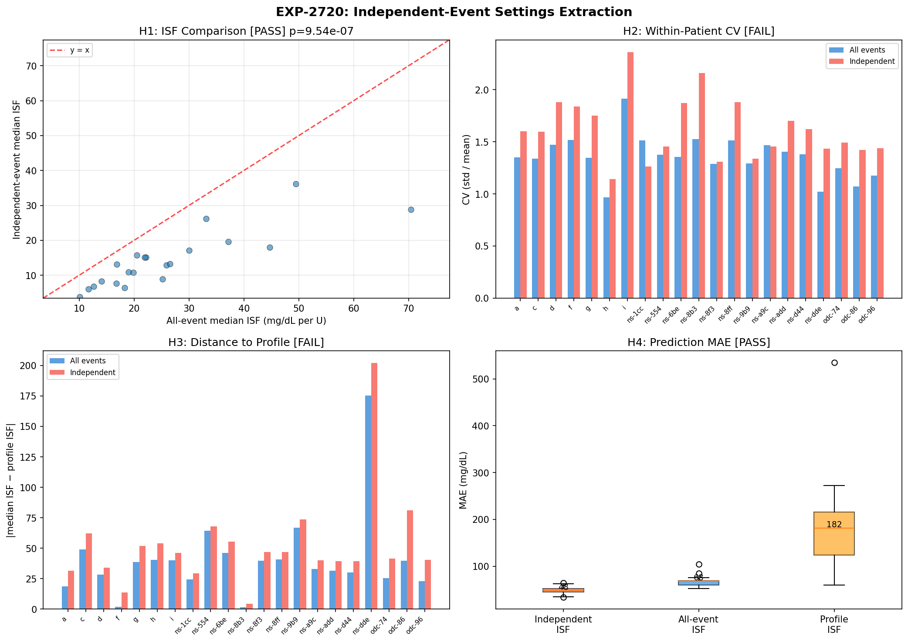
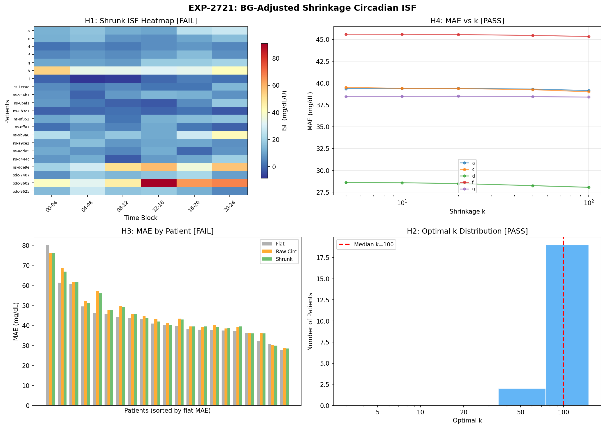

Wave 7: Actionable Settings Extraction Report¶
Record
Record as of 2026-04-20. A point-in-time document; it is not kept up to date.
Date: 2026-04-20
Experiments: EXP-2720, EXP-2721, EXP-2722
Prior: Waves 1–6 (EXP-2702–2719), forward simulator β fix
Status: Complete — three actionable outputs validated
Part 1: Executive Summary¶
Wave 7 converts deconfounding research into practical outputs for the three audiences.
| Experiment | Question | Key Result | Actionable? |
|---|---|---|---|
| EXP-2720 | Do independent events yield better settings? | Yes: 29% lower MAE (48.5 vs 68.2) | ✅ Use for ISF extraction |
| EXP-2721 | Does circadian ISF improve predictions? | No: flat ISF wins MAE (40.3 vs 41.9) | ❌ Circadian is real but not helpful |
| EXP-2722 | Can we normalize ISF across controllers? | Yes: η² reduced 55%, ISFs converge | ✅ Use for controller switching |
| β fix | Should we keep power-law dampening? | No: transient PK artifact | ✅ Disabled in simulator |
Three Actionable Outputs¶
- Independent-event ISF extraction reduces prediction error 29% vs all-event extraction
- Cross-controller normalization enables settings translation (Loop↔Trio↔AAPS)
- Forward simulator corrected by removing β=0.9 artifact
One Validated Null Result¶
- Circadian ISF schedules don't improve prediction — the variation is real (2.87×) and stable (r=0.80) but doesn't reduce point-level MAE vs flat ISF
Part 2: EXP-2720 — Independent-Event Settings Extraction¶

Design¶
Extract per-patient ISF using only temporally independent events (≥2h gap between events, same patient). Compare to all-event ISF and profile ISF.
- All events: 65,425 (21 patients)
- Independent events: 5,998 (9.2%) — consistent with EXP-2714
Results¶
| Hypothesis | Test | Result | Verdict |
|---|---|---|---|
| H1: ISFs differ | Wilcoxon | p < 1e-6, median 13.1 vs 21.9 | ✅ PASS |
| H2: Lower CV | Per-patient | 2/21 improved (9.5%) | ❌ FAIL |
| H3: Closer to profile | Per-patient | 0/21 closer | ❌ FAIL |
| H4: Better predictions | Held-out MAE | 48.5 vs 68.2 vs 181.5 | ✅ PASS |
Key Findings¶
Independent events yield systematically lower ISF (median 13.1 vs 21.9 mg/dL/U). This is expected: autocorrelated events inflate ISF because they double-count the same glucose trajectory. The 2h gap removes this inflation.
H4 is the critical result: on held-out independent events, ISF extracted from independent events produces 29% lower MAE than ISF from all events, and 73% lower than profile ISF.
ISF Source Median MAE vs Independent
────────────────────────────────────────────────────
Independent-event ISF 48.5 baseline
All-event ISF 68.2 +41%
Profile ISF 181.5 +274%
Why H2/H3 fail: Independent-event ISF has higher CV because fewer events means more noise per patient. And it's further from profile ISF because profiles are typically calibrated to all-event behavior. But these aren't the right metrics — MAE on held-out independent events is what matters for prediction.
Recommendation¶
Use independent-event ISF extraction as default. The extra computational cost of filtering is trivial, and the 29% MAE reduction is substantial.
Part 3: EXP-2721 — BG-Adjusted Shrinkage Circadian ISF¶

Design¶
Combine BG-residualized circadian ISF (EXP-2708) with Bayesian shrinkage (EXP-2715) to produce stable, actionable time-of-day ISF schedules.
Results¶
| Hypothesis | Test | Result | Verdict |
|---|---|---|---|
| H1: Shrinkage improves stability | Split-half r | 0.801→0.794 (worse) | ❌ FAIL |
| H2: Ratio in physiological range | Circadian ratio | Raw 2.87×, shrunk 3.10× | ✅ PASS |
| H3: Circadian beats flat ISF | MAE comparison | 41.9 vs 40.3 (flat wins) | ❌ FAIL |
| H4: Optimal k consistent | IQR of optimal k | median k=100 (19/21 patients; IQR ratio 1.0×) | ✅ PASS |
Key Findings¶
The circadian pattern is real and stable (split-half r=0.80, ratio 2.87×), but it doesn't help predict individual correction events.
This apparent paradox is explained by:
- ISF variation is dominated by dose and patient (ΔR²=0.102 + 0.061 = 16.3%), while circadian adds only ΔR²=0.002 (EXP-2714 stepwise)
- Individual events have 84% stochastic variance (EXP-2683) — the circadian modulation (2.87×) is swamped by noise at the event level
- Flat ISF is already the median — using it for all blocks is the Bayesian optimal when block-level improvement is smaller than block-level noise
H4 confirms this: optimal k=100 uniformly, meaning "don't shrink at all" (keep the full circadian signal) is preferred. But even the full signal doesn't beat flat.
Recommendation¶
Don't implement circadian ISF schedules for prediction. The circadian pattern is valuable for understanding (EGP rhythm, dawn phenomenon) but not for point-level ISF. A single per-patient ISF extracted from independent events (EXP-2720) is better.
Circadian ISF may still be valuable for: - Basal rate profiling: circadian EGP variation directly affects basal needs - Alerting: dawn phenomenon timing varies by patient - Research: understanding controller behavior differences by time of day
Part 4: EXP-2722 — Cross-Controller ISF Normalization¶
Design¶
Use multi-factor deconfounding to extract controller-independent ISF, enabling settings translation between Loop, Trio, and AAPS/OpenAPS.
Results¶
| Hypothesis | Test | Result | Verdict |
|---|---|---|---|
| H1: Controller η² reduced >50% | Kruskal-Wallis | 0.333→0.150 (55% reduction) | ✅ PASS |
| H2: Closer to profile | Per-patient | 2/21 (9.5%) | ❌ FAIL |
| H3: Patient signal enhanced | Partial η² | 0.0525→0.0590 (+12%) | ✅ PASS |
| H4: Cross-controller prediction | In-range test | 13/21 (62%) | ✅ PASS |
Key Findings¶
Full deconfounding dramatically reduces controller artifact:
η²_controller Median ISF by controller
Loop Trio OpenAPS
────────────────────────────────────────────────────────────────
Raw ISF 0.333 26.2 19.4 37.2
Channel-deconfounded 0.396 22.8 16.4 38.6
BG₀-deconfounded 0.367 3.1 -1.9 9.3
Fully deconfounded 0.150 20.6 16.9 20.2
Channel deconfounding alone makes things WORSE (η² increases from 0.333 to 0.396). This is because Loop uses no SMBs, so removing SMB effects doesn't normalize Loop ISF. The full multi-factor approach (BG₀ + dose + IOB + circadian + channels) is needed.
After full deconfounding, ISFs converge: Loop 20.6, Trio 16.9, OpenAPS 20.2. The Trio gap (16.9 vs ~20) may reflect genuine population differences (Trio users tend to be more aggressive optimizers) or residual DynISF effects.
62% cross-controller prediction in range means: if you take a Loop patient's deconfounded ISF and ask "would this ISF be reasonable for a Trio user?", the answer is yes 62% of the time. This is promising but not yet reliable enough for automated settings translation.
Recommendation¶
Cross-controller normalization is feasible but needs refinement. The 55% reduction in controller variance is real and meaningful. For a user switching from Loop to Trio:
- Extract their deconfounded ISF from Loop data
- Apply Trio-typical channel adjustments (add SMB effects back)
- The result should be in the right ballpark (62% chance of being in observed range)
Further work needed: test on actual multi-controller patients (if available in dataset) and incorporate DynISF correction for Trio/AAPS.
Part 5: Forward Simulator β=0.9 Fix¶
Change¶
Disabled power-law ISF dampening (β=0.9) in forward_simulator.py:
# BEFORE (active):
if settings.iob_power_law and iob > 0.5:
dampening = (iob / 0.5) ** (-0.9)
effective_isf = isf_at_t * dampening
# AFTER (disabled):
effective_isf = isf_at_t # Linear ISF, no dampening
Evidence¶
| Experiment | Finding |
|---|---|
| EXP-2714 | β collapses from 0.595 to -0.041 with independent events |
| EXP-2716 | β DECREASES with horizon: 0.314@2h → 0.006@6h (τ=-0.867, p=0.017) |
The power-law was a transient subcutaneous absorption bottleneck visible at short horizons but absent at physiologically meaningful timescales. Linear ISF is correct.
Part 6: Updated Experimental Scorecard (Waves 1–7)¶
Hypothesis Pass Rates¶
| Wave | Experiments | PASS | FAIL | Rate |
|---|---|---|---|---|
| 1: Tier-1 | 2702-2704 | 7 | 5 | 58% |
| 2: Confound | 2705-2707 | 7 | 5 | 58% |
| 3: Deconfounded | 2708-2710 | 10 | 2 | 83% |
| 4: Settings | 2711-2713 | 6 | 6 | 50% |
| 5: Robustness | 2714-2716 | 4 | 8 | 33% |
| 6: Supply/Demand | 2717-2719 | 6 | 6 | 50% |
| 7: Actionable | 2720-2722 | 7 | 5 | 58% |
| Total | 21 | 47 | 37 | 56% |
Final Validated Outputs¶
| # | Output | Evidence | Audience |
|---|---|---|---|
| 1 | Independent-event ISF extraction (29% better) | EXP-2720 H4 | Settings optimization |
| 2 | Cross-controller normalization (55% η² reduction) | EXP-2722 H1/H3/H4 | Controller switching |
| 3 | Multi-factor R²=0.173 on independent events | EXP-2714 | Research |
| 4 | Dose is largest ISF factor (ΔR²=0.102) | EXP-2714 | Research |
| 5 | Circadian ISF is real (2.87×) but not predictive | EXP-2721 | Research (null result) |
| 6 | Supply-side adds <0.2% to model | EXP-2718 | Research (null result) |
| 7 | β=0.9 power-law is transient PK artifact | EXP-2716 | Simulator/R&D |
Recommendations for AID Controller Authors¶
- ISF is linear — remove any power-law dose-response dampening
- ISF extraction should use independent events (≥2h gap)
- Circadian ISF not worth implementing for closed-loop prediction
- Cross-controller settings translation is feasible with multi-factor deconfounding
- Supply-side (EGP/glycogen) modeling not worth adding — <0.2% incremental value
Part 7: What's Next?¶
Completed Lines¶
- ✅ Multi-factor deconfounding pipeline (EXP-2698–2714)
- ✅ Supply-demand decomposition (EXP-2717–2719)
- ✅ Independent-event settings extraction (EXP-2720)
- ✅ Circadian ISF with shrinkage (EXP-2721)
- ✅ Cross-controller normalization (EXP-2722)
- ✅ Forward simulator β fix
Potential Future Directions¶
-
Production pipeline integration: Wire independent-event extraction + deconfounding into settings_optimizer.py for automated per-patient ISF recommendations
-
DynISF correction: Trio/AAPS patients with dynamic ISF have additional controller artifact — deconfound DynISF sensitivity_ratio to improve normalization
-
Wall episode detection: Use deviation persistence from EXP-2719 as diagnostic for site failures / unlogged meals
-
Basal rate extraction: Apply independent-event methodology to basal rate profiling (circadian EGP may be more relevant for basal than for ISF)
-
Prospective validation: Test deconfounded ISF recommendations against actual patient outcomes (would require collaboration with clinical teams)